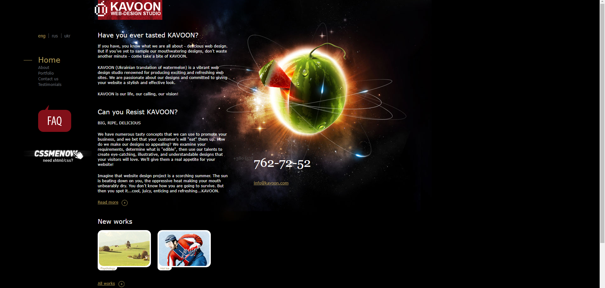

- The website "On the Grid" is a great example of contrast.
- The blue background contrasts with the white text and images. This makes it easy to read.
- The fonts are different to make the name of the city stand out more and then the country and/or state which is below. This adds balance to the webpage as well as makes the viewer notice what you want them to notice first.
-
- The website "Obermayer" is a great example of repetition.
- The layout of the page is consistent making it easy to navigate around the page
- The layout also help the viewer know where everything is and can make it so that the viewer feels comfortable on the page and will stay on the webpage longer.
-
Alignment: Kavoon

The website "Kavoon" is a great example of alignment.
The layout of the webpage is left alignment.
It keeps the alighnemtn throughout the whole webpage.

- The website "Los Angles Times" is a great example of proximity.
- The things similar to eachother are together.
- This makes it easier to navigate and can make the viewer feel comfortable with the webpage
-